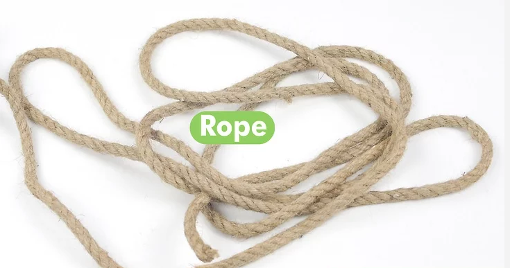
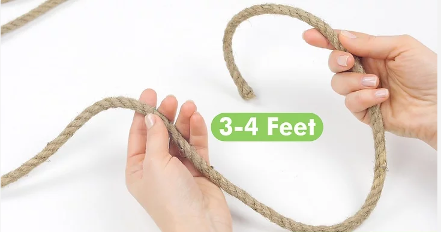
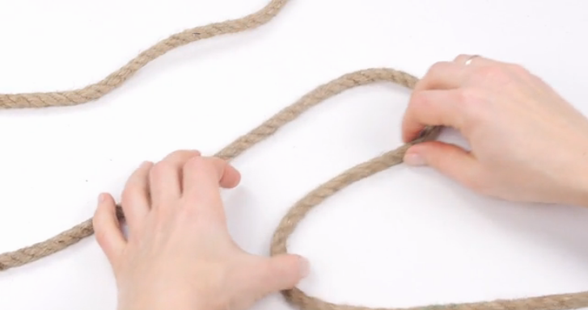
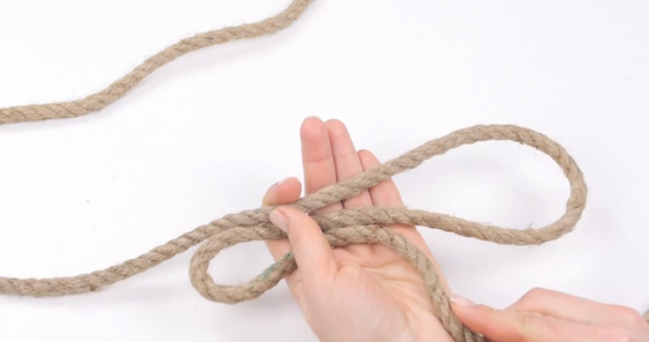
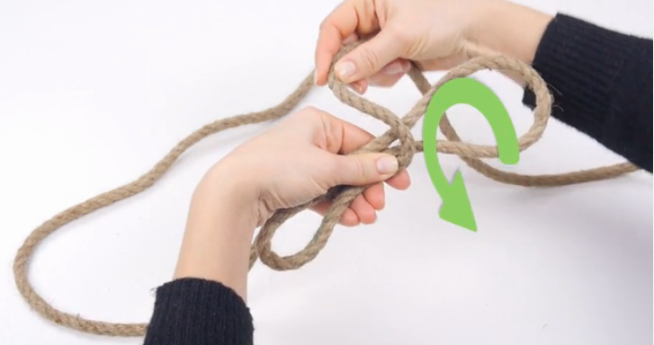
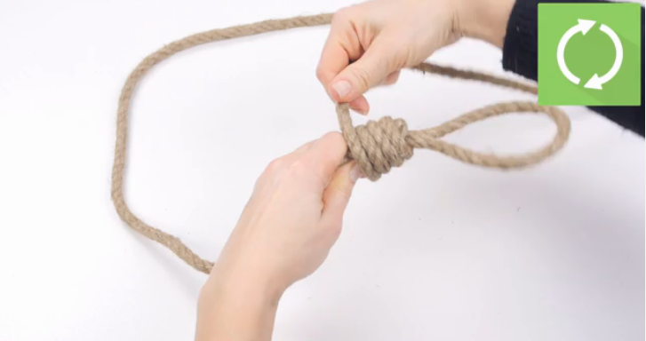
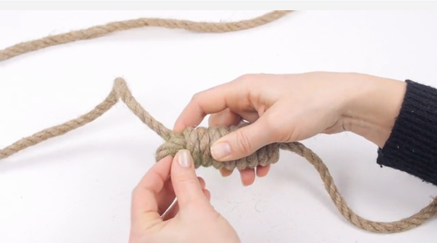
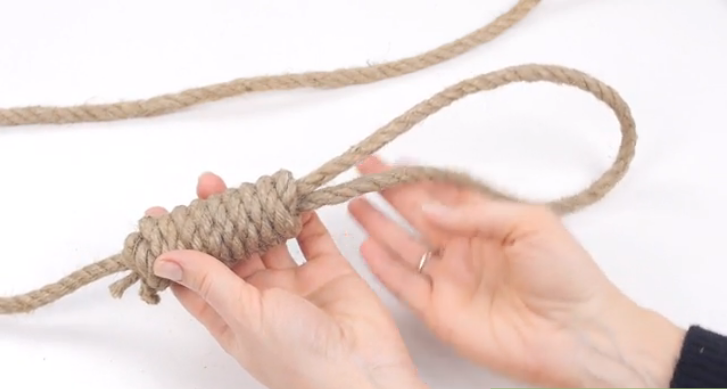

step 1: Understand basic knot-tying terminology to make learning knots a breeze.
step 2: Pull out at least 3-4 feet of rope to work with.
step 3: Take the last two feet of rope (from the end) and make a simple S-shape.
stap 4: Take the standing line of the rope and pass it under all three sections of the S.
step 5: Loop the end of the rope back around the top of the S-shape of rope and then back under.
step 6: Continue wrapping the rope around the S-Shape of rope 6 more times.
step 7: Pass the end of the rope through the bottom loop of the noose.
step 8: Pull on the noose and standing line to tighten.
